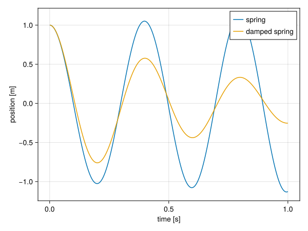

Composition by closure
This chapter, including the prototype code in examples/composition, was written by Claude Opus 5.5 (Anthropic) at the request of Johan Hidding, on 2026-11-03.
This page is a stand-alone prototype of the design discussed in issue #14. It doesn't use @compose at all. The question it tries to answer: can we keep what @compose is good at (diamond inheritance and automatically including all transitive dependencies), while composing values out of parts that Julia can dispatch on, instead of merging structs by name?
The prototype has three ingredients:
- A component is an ordinary type (here, each component module defines an
Inputstruct). A component declares what it depends on by extendingrequires. A dependency is either another component (a concrete type) or a role (an abstract type), which any component subtyping it can fill. - A closure computation walks those declarations, resolves roles, and returns every needed component exactly once, dependencies first. This is the part of
@composethat handles the diamond. - A
Compositeholds one part per component. Property access is forwarded to the part that owns the field, so code can keep writinginput.t_step, but each part keeps its own type for dispatch.
No macros are needed: the closure is computed by an ordinary function, and the composed type is just Composite{Tuple{...}}.
Implementation
examples/composition/composition.jl
#| file: examples/composition/composition.jl
module Composition
export requires, default_implementation, closure, model_type,
Composite, parts, component, map_components
<<composition-requires>>
<<composition-closure>>
<<composition-composite>>
<<composition-component>>
<<composition-construct>>
endRequirements and roles
By default a component has no dependencies. Components with dependencies extend requires. A role may name a default implementation, used when nothing else fills it.
#| id: composition-requires
"""
requires(T::Type)
The components (concrete types) or roles (abstract types) that component `T`
depends on. Extend this for every component that has dependencies.
"""
requires(::Type) = ()
"""
default_implementation(R::Type)
The component used to fill role `R` if no component implementing `R` is
selected explicitly.
"""
default_implementation(R::Type) =
error("no component implementing role $(R) was selected, and there is no default")Closure
closure does a depth-first walk from the selected components, appending each component after its dependencies, so that every component appears once. Roles are resolved first: a component selected explicitly takes precedence over the default implementation. Selecting two implementations of the same role is an error, and so is a cycle.
#| id: composition-closure
"""
closure(roots::Type...)
Compute all components needed by `roots`, in dependency order (dependencies
first), each component appearing once. Abstract requirements (roles) are
resolved to a component implementing them: one of the `roots` if any, otherwise
`default_implementation`.
"""
function closure(roots::Type...)
order = Type[]
visiting = Type[]
function resolve(R)
isabstracttype(R) || return R
candidates = [C for C in roots if C <: R]
length(candidates) > 1 &&
error("role $(R) is implemented by more than one component: $(candidates)")
isempty(candidates) || return only(candidates)
return default_implementation(R)
end
function visit(T)
C = resolve(T)
C in order && return
C in visiting && error("cyclic requirement: $(join([visiting; C], " -> "))")
push!(visiting, C)
foreach(visit, requires(C))
pop!(visiting)
push!(order, C)
end
foreach(visit, roots)
return Tuple(order)
endComposite values
A Composite wraps a tuple of parts. Property access is forwarded to the part that has a field of that name. The lookup is done in a generated function, so for a constant property name it resolves at compile time and input.t_step is as fast as a field access.
#| id: composition-composite
"""
Composite{T <: Tuple}
A value composed of parts, one per component. Properties are forwarded to the
part that has a field of that name, so `c.x` works for any field `x` of any
part.
"""
struct Composite{T <: Tuple}
parts::T
end
parts(c::Composite) = getfield(c, :parts)
# Index of the part that owns field `name`. Computed at compile time.
@generated function _owner(::Type{T}, ::Val{name}) where {T <: Tuple, name}
i = findfirst(P -> hasfield(P, name), fieldtypes(T))
i === nothing ? :(error("no component has a field `$(name)`")) : i
end
Base.getproperty(c::Composite, name::Symbol) =
getfield(parts(c)[_owner(typeof(parts(c)), Val(name))], name)
Base.setproperty!(c::Composite, name::Symbol, value) =
setproperty!(parts(c)[_owner(typeof(parts(c)), Val(name))], name, value)
Base.propertynames(c::Composite) = Tuple(Iterators.flatten(fieldnames.(typeof.(parts(c)))))
function Base.show(io::IO, c::Composite)
print(io, "Composite(")
join(io, parts(c), ", ")
print(io, ")")
endA component reaches its dependencies through component, which looks up a part by its type or by the role it implements. This is where dispatch comes in: the part that comes back has its own concrete type.
#| id: composition-component
# Index of the part that is (or implements) `T`. Computed at compile time.
@generated function _index(::Type{P}, ::Type{T}) where {P <: Tuple, T}
i = findfirst(X -> X <: T, fieldtypes(P))
i === nothing ? :(error("no component of type $(T)")) : i
end
"""
component(c::Composite, T)
The part of `c` that is of type `T`, or that implements role `T`.
"""
component(c::Composite, ::Type{T}) where {T} = parts(c)[_index(typeof(parts(c)), T)]
"""
map_components(f, c::Composite)
Apply `f` to every part of `c` and compose the results that aren't `nothing`.
"""
map_components(f, c::Composite) = Composite(Tuple(filter(!isnothing, map(f, parts(c)))))Construction
Users shouldn't need to know how a model is split into parts, so a composite is constructed from flat keyword arguments. Each argument is routed to the part that has a field of that name, and unknown arguments are an error. model_type computes the closure and checks that no field name is defined by two components, since forwarding would be ambiguous otherwise.
#| id: composition-construct
"""
Composite{T}(; kwargs...)
Construct a composite from flat keyword arguments. Each keyword goes to the
part that has a field of that name.
"""
function (::Type{Composite{T}})(; kwargs...) where {T <: Tuple}
types = fieldtypes(T)
known = Set(Iterators.flatten(fieldnames.(types)))
unknown = setdiff(keys(kwargs), known)
isempty(unknown) || error("unknown arguments: $(join(unknown, ", "))")
return Composite{T}(map(types) do P
P(; (k => v for (k, v) in kwargs if hasfield(P, k))...)
end)
end
"""
model_type(roots::Type...)
The `Composite` type for the closure of `roots`.
"""
function model_type(roots::Type...)
components = closure(roots...)
names = collect(Iterators.flatten(fieldnames.(components)))
duplicate = [n for n in unique(names) if count(==(n), names) > 1]
isempty(duplicate) || error("field names defined by more than one component: $(duplicate)")
return Composite{Tuple{components...}}
endAn elemental example
A small diamond: Double and Square both depend on a source of a value, and Sum depends on both. The source is a role, AbstractSource, with two implementations, Constant (the default) and Ramp. Every component has a value method that dispatches on its own type.
#| file: examples/composition/elemental.jl
include("composition.jl")
using .Composition
import .Composition: requires, default_implementation
using Test
<<elemental-components>>
<<elemental-run>>The role is an abstract type, and value is the function every component implements.
#| id: elemental-components
abstract type AbstractSource end
function value end
module Constant
import ..AbstractSource, ..value
@kwdef struct Input <: AbstractSource
c::Float64 = 1.0
end
value(s::Input, model) = s.c
end
module Ramp
import ..AbstractSource, ..value
@kwdef struct Input <: AbstractSource
slope::Float64 = 1.0
x::Float64 = 0.0
end
value(s::Input, model) = s.slope * s.x
end
default_implementation(::Type{AbstractSource}) = Constant.InputDouble and Square require the role, not a specific implementation, and find it with component.
#| id: elemental-components
module Double
import ..AbstractSource, ..value, ..requires
using ..Composition: component
@kwdef struct Input
factor::Float64 = 2.0
end
requires(::Type{Input}) = (AbstractSource,)
value(d::Input, model) = d.factor * value(component(model, AbstractSource), model)
end
module Square
import ..AbstractSource, ..value, ..requires
using ..Composition: component
struct Input end
requires(::Type{Input}) = (AbstractSource,)
value(::Input, model) = value(component(model, AbstractSource), model)^2
end
module Sum
import ..value, ..requires
using ..Composition: component
import ..Double, ..Square
struct Input end
requires(::Type{Input}) = (Double.Input, Square.Input)
value(::Input, model) =
value(component(model, Double.Input), model) +
value(component(model, Square.Input), model)
endSelecting only Sum is enough: the closure includes the source once, even though two components require it.
#| id: elemental-run
@show closure(Sum.Input)
const Model = model_type(Sum.Input)
m = Model(c = 3.0, factor = 10.0)
@show m
@show m.c m.factor
@show value(component(m, Sum.Input), m)closure(Sum.Input) = (Main.Constant.Input, Main.Double.Input, Main.Square.Input, Main.Sum.Input)
m = Composite(Main.Constant.Input(3.0), Main.Double.Input(10.0), Main.Square.Input(), Main.Sum.Input())
m.c = 3.0
m.factor = 10.0
value(component(m, Sum.Input), m) = 39.0To substitute the source, select Ramp explicitly. Both branches of the diamond now share the Ramp: $2 \cdot 3 + 3^2 = 15$.
#| id: elemental-run
const RampModel = model_type(Sum.Input, Ramp.Input)
@show closure(Sum.Input, Ramp.Input)
r = RampModel(slope = 2.0, x = 1.5)
@show value(component(r, Sum.Input), r)closure(Sum.Input, Ramp.Input) = (Main.Ramp.Input, Main.Double.Input, Main.Square.Input, Main.Sum.Input)
value(component(r, Sum.Input), r) = 15.0Property access and the whole value computation are type-stable. Mistakes are caught when the model is built: an unknown argument, or two components filling the same role.
#| id: elemental-run
get_c(m) = m.c
get_slope(m) = m.slope
@inferred get_c(m)
@inferred get_slope(r)
@inferred value(component(r, Sum.Input), r)
@test_throws ErrorException Model(colour = :red)
@test_throws ErrorException model_type(Sum.Input, Ramp.Input, Constant.Input)
println("all checks passed")Porting the spring example
Here is the spring example on top of Composition. The structure stays the same: a Time component, a Spring component that depends on it, and a model. The differences:
Springdeclares its dependency withrequiresinstead of@mixin.initial_stateandstep!are generic functions that dispatch on the component (the first argument). The composite versions loop over the parts in dependency order, which replaces@constructorand the hand-writtenModel.step!.- The model is a single line,
model_type(Spring.Input).
#| file: examples/composition/spring.jl
include("composition.jl")
using .Composition
import .Composition: requires
using Unitful
using CairoMakie
<<spring-common>>
<<spring-time>>
<<spring-spring>>
<<spring-damping>>
<<spring-run>>The common module defines the two generic functions, with a no-op default for components that have no state or don't step.
#| id: spring-common
module Common
using ..Composition: Composite, parts, map_components
"""
initial_state(part, input)
The initial state of a single component, or `nothing` if it has no state.
"""
initial_state(part, input) = nothing
initial_state(input::Composite) = map_components(p -> initial_state(p, input), input)
"""
step!(part, input, state)
Advance the state of a single component. Components step in dependency order.
"""
step!(part, input, state) = nothing
step!(input::Composite, state) = foreach(p -> step!(p, input, state), parts(input))
export initial_state, step!
endEach component now has its own Input and State types. Methods take the component's own part as first argument for dispatch, and the full composite input and state to reach other components' fields.
#| id: spring-time
module Time
using Unitful
import ..Common: initial_state, step!
@kwdef struct Input
t_step::typeof(1.0u"s")
t_end::typeof(1.0u"s")
end
mutable struct State
time::typeof(1.0u"s")
end
initial_state(::Input, input) = State(0.0u"s")
step!(::Input, input, state) = (state.time += input.t_step)
function run(input)
s = initial_state(input)
Channel() do ch
while s.time < input.t_end
step!(input, s)
put!(ch, deepcopy(s))
end
end
end
end#| id: spring-spring
module Spring
using Unitful
import ..Common: initial_state, step!
import ..requires
import ..Time
@kwdef struct Input
spring_constant::typeof(1.0u"s^-2")
initial_position::typeof(1.0u"m")
end
mutable struct State
position::typeof(1.0u"m")
velocity::typeof(1.0u"m/s")
end
requires(::Type{Input}) = (Time.Input,)
initial_state(::Input, input) = State(input.initial_position, 0.0u"m/s")
function step!(::Input, input, state)
delta_v = -input.spring_constant * state.position
state.position += state.velocity * input.t_step
state.velocity += delta_v * input.t_step
end
endThe original Model.step! stepped the spring before the time. Here the time steps first, because it is a dependency. The spring doesn't read the time, so the result is the same: running both versions gives identical positions.
Extending from outside
A new component doesn't need anything from the namespaces of the components it builds on, other than the names it uses. Damping is written as if it lived in a separate package, referring to everything by absolute path. Selecting Damping pulls in Spring, and through it Time.
#| id: spring-damping
module Damping
using Unitful
import Main.Composition: requires
import Main.Common: step!
import Main.Spring
@kwdef struct Input
damping::typeof(1.0u"s^-1")
end
requires(::Type{Input}) = (Spring.Input,)
step!(::Input, input, state) =
(state.velocity -= input.damping * state.velocity * input.t_step)
end#| id: spring-run
const Model = model_type(Spring.Input)
const DampedModel = model_type(Damping.Input)
@show closure(Damping.Input)
parameters = (
t_step = 0.001u"s",
t_end = 1.0u"s",
spring_constant = 250.0u"s^-2",
initial_position = 1.0u"m",
)
function plot_result()
output = Time.run(Model(; parameters...)) |> collect
damped = Time.run(DampedModel(; parameters..., damping = 3.0u"s^-1")) |> collect
fig = Figure()
ax = Axis(fig[1, 1]; xlabel = "time [s]", ylabel = "position [m]")
for (label, run) in ["spring" => output, "damped spring" => damped]
lines!(ax, [s.time for s in run] ./ u"s", [s.position for s in run] ./ u"m";
label = label)
end
axislegend(ax)
save("docs/src/fig/composition-spring.svg", fig)
end
plot_result()closure(Damping.Input) = (Main.Time.Input, Main.Spring.Input, Main.Damping.Input)
Compared to @compose
What stays the same:
- Diamonds and transitive closure. A model names only the components it needs directly, and shared dependencies appear once.
- A flat user interface. Models are still constructed with flat keyword arguments, and code still reads
input.t_step.
What changes:
- Components are types, not modules. Each part keeps its own type, so behaviour is selected by dispatch instead of
@for_eachover module names. - Substitution through roles. A component can depend on a role, and any component implementing it fills the role for every dependant at once (see #4).
- No code generation from stored syntax. There is no
Core.evalof parent ASTs, and no copiedusingstatements, so components can be defined anywhere (see #16). - Ordinary Julia tooling applies. Struct definitions are written out where they are defined, so they can be found, documented and revised like any other struct.
Limitations of this prototype:
- Field names must be unique across a model. Forwarding needs to know which part owns a name.
model_typechecks this. - One role per component. Roles are abstract types, so a component can implement only one. Traits would lift this restriction.
- Dependency order is the only order.
step!runs components in dependency order. A model that needs a different order defines its ownstep!, as@composemodels do now. - No per-item records. Records that are composed per item, like CarboKitten's facies, would be vectors of composites. They aren't covered here.